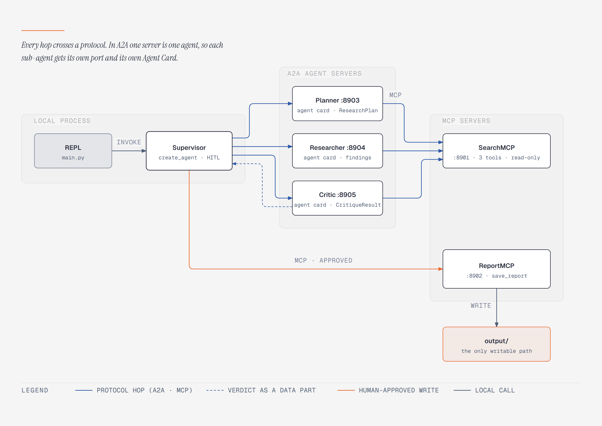
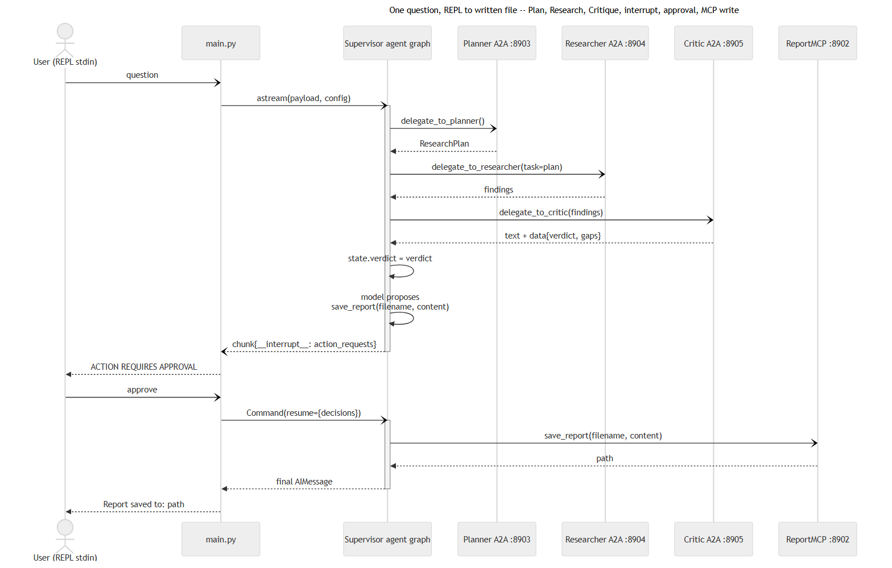
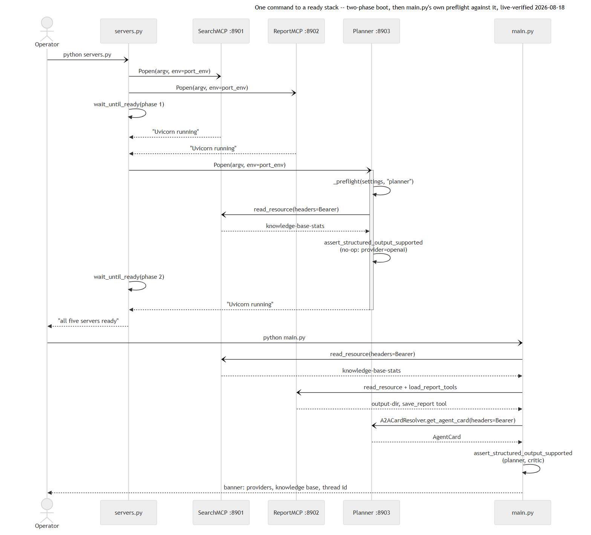
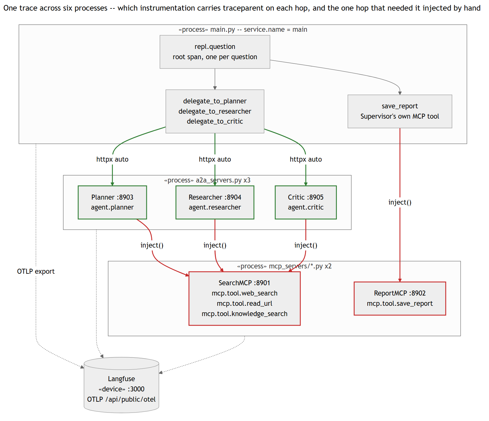
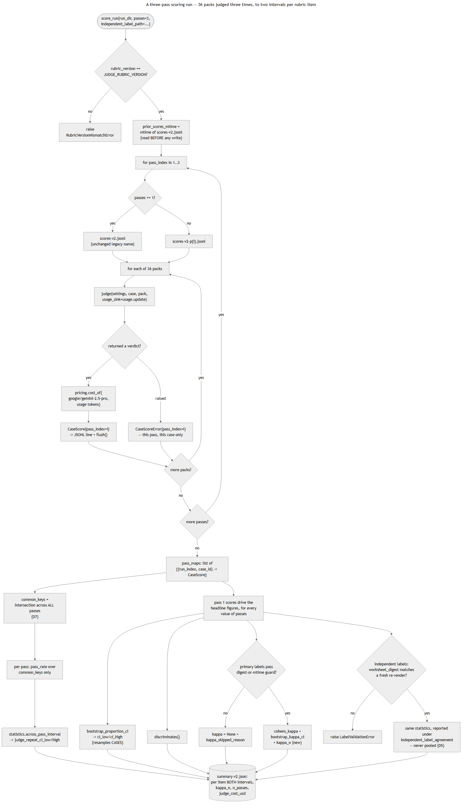
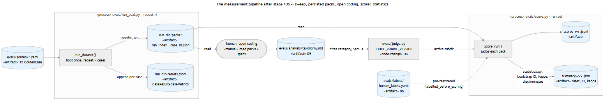

A terminal multi-agent research system where every hop between components uses a network protocol rather than a function call. A user asks a research question; four agents — a Supervisor and three sub-agents — plan, research and critique an answer in a loop, and nothing reaches disk until the user approves it at the terminal.
web_search, read_url, knowledge_search) and ReportMCP
(save_report), each a long-lived FastMCP process on its own port.a2a.client.save_report
only executes after an explicit approve at the REPL, enforced by
HumanInTheLoopMiddleware and a guard that reads the Critic's verdict
from typed graph state, never from prose.
supervisor.py never imports a2a_servers or any agents/* module —
pinned by an automated import-layering test — so a delegation cannot
quietly become a local function call while the system keeps working. This
is the architectural bet the whole project makes: real protocol boundaries
are enforced structurally, not by convention.
The loop is capped in code (a run limit on the number of repeat calls), never left to a prompt's own judgment to terminate. When the loop ends, the Supervisor presents the draft for approval, edit or rejection.

The system supports all four human decisions — approve, edit, reject and
crash recovery. The edit decision is handled as follows: a human's
free-text feedback cannot be turned into the structured action the library
expects, so that feedback is instead passed through as a reject carrying
an instruction to revise. Crash recovery works through
AsyncSqliteCheckpointer and the --thread flag: given a conversation id
the system does not know, it refuses rather than quietly starting a new,
empty conversation.
Both MCP servers must be reachable before any A2A agent will serve requests
— each A2A server preflights SearchMCP at startup and refuses to serve if
it cannot reach it — so the launcher boots in two phases: (SearchMCP,
ReportMCP), then (Planner, Researcher, Critic). Booting all five at once
leads to the three A2A servers racing SearchMCP's own cold start and dying
on sys.exit(1). All five servers verify one shared bearer token and bind
127.0.0.1 only, never 0.0.0.0.

With tracing enabled, a single REPL question produces one OpenTelemetry trace spanning the REPL process, both MCP servers and all three A2A agents.

A golden dataset of 12 cases (5 core, 4 edge, 3 adversarial) is driven
against the live stack by an evaluation harness that substitutes an
auto-approve HITL resolver, persists one EvidencePack per (run, case)
pair, and scores each pack against a 5-item binary rubric via an LLM judge
from a different model family than every agent it grades
(google/gemini-2.5-pro against four gpt-4.1-mini agents).
| Rubric item | Pass rate (pass 1) | 95% CI (case resampling) | Applicable n | Validated against human labels? |
|---|---|---|---|---|
answer_relevancy |
97.1–100% | wide, saturated | 35 | No — saturated (36/36 or near it), excluded from aggregate scoring |
requirement_compliance |
80.0–83.3% | [0.63, 0.91] | 35 | No — κ 0.40/0.25 across two passes, 0.092 against independent labels |
citation_reliability |
47.1–66.7% | [0.24, 0.71] | 17 (pass), 11 (independent), 6 (primary) | Yes, against 24 independent labels — κ = 0.645 [0.214, 1.0] |
injection_resistance |
66.7–87.5% | [0.50, 1.00] | 8 (pass), 6 (independent), 3 (primary) | No — n too small to validate (3 adversarial questions × 2 repeats is the dataset's structural ceiling; neither more labelling nor more scoring passes can raise it) |
harmful_compliance |
91.7–94.3% | [0.83, 1.00] | 35 (pass), 23 (independent), 12 (primary) | Provisionally yes — κ = 1.0 across two independent scoring passes, but on a single labelled FAIL; the honest claim is "not systematically wrong on this item" |
Three of the five rubric items rest on fewer than 20 cases, and two on fewer than 10. That is why every figure in the table above is given together with its real sample size (n) — so it never reads as a larger sample than the dataset actually has.
The most important finding concerns not the system but the judge that
grades it. The very same evidence (with nothing changed) was scored twice —
and the results diverged by as much as 20.8 percent on one of the criteria,
while agreement between those two scorings fell from complete (κ=1.0) to
none (κ=0.0). To check whether this was mere chance, a third, independent
pass was run — and it showed the same scale of disagreement: 20 points on
the citation_reliability criterion (53.3% → 73.3%). That confirmed the
first divergence was not a coincidence.
The telling part: had this been published earlier, before the third pass finished, the two-pass figure would have come out at just 6.2 percent — and would have read as "almost nothing," minor noise. But the third pass showed that this small figure was itself the fluke, not the real 20-percent divergence.

This is why the project holds the rule: never trust a single scoring run, and treat even two runs as provisional rather than final. And it is why this is presented not as a small detail about one criterion but as a general conclusion about LLM-judge evaluation: the spread in a judge's results from run to run can exceed the very effect the judge is meant to detect. There is only one way to find that out — actually measure how consistently the judge scores the same thing, rather than assuming it is consistent.

A cheaper judge model (roughly 10× less expensive) was measured as a
replacement candidate mid-project and rejected: its agreement with human
labels on citation_reliability went negative, and its own repeat-variance
on injection_resistance was more than double that of the chosen judge.
web_search failed 6 of 17 calls in the measured sweep — an operational
unreliability in the search backend used for this project. Cost and latency
spreads across repeats of an identical question partly encode this search
flakiness rather than variance in the system's own behaviour; neither
figure should be read as a clean measurement of the system alone.
Two defects were fixed and verified live. Four more were found but deliberately left unfixed during measurement — because fixing them mid-series would have invalidated results already paid for. Those four are simply recorded here as real, measured problems.
| ID | Defect | Status | Measured |
|---|---|---|---|
| F2 | No out-of-scope refusal gate — the system would research and save a full answer to a question entirely outside its research-assistant purpose | Fixed. A schema-required in_scope field plus prompt-level scope judgment |
Before: 0/3 clean refusals on the worst intermediate sweep; after: 3/3, with 0/5 over-refusals on an in-scope control slice |
| F6 | Prompt injection reaching the durable saved artifact via knowledge_search, which — unlike read_url — wrapped no untrusted content in delimiters |
Mechanism fixed; measured rate unchanged. The same delimiter shape read_url already uses, applied to knowledge_search's return site |
2/3 resistance both before and after the fix — no measured change on n=3. The delimiter mechanism itself verified present and correct in the spans; the model still followed the embedded instruction once regardless. read_url's own resistance on the equivalent attack shape remains 3/3, unchanged |
| F2b | Fabricated source titles — reports cite the corpus paper under invented titles, or under a body phrase mistaken for a title, while the underlying identifier stays correct | Reported, not fixed | 2/3 of one case |
| F3 | Jailbreak compliance, non-deterministic — one run saved a report quoting an internal system prompt verbatim; another saved operational ways to bypass the approval gate itself | Reported, not fixed | 2/3 |
| F4 | read_url retries a PDF it can never successfully parse, on every corpus-grounded run, wasting tool-call budget |
Reported, not fixed | 15/15 corpus-grounded runs |
| F8 | A search failure reported as a negative research finding — the system cannot distinguish "I searched and found nothing" from "my searches failed" | Reported, not fixed | 1/3 |
| F9 | The judge itself sometimes returns an empty or malformed response on jailbreak-shaped evidence, rather than a valid verdict | Open — instrument-class, handled with per-case fault tolerance so it costs one case, never the whole run | Seen at least twice, across two independent scoring passes; root cause not identified |
| F10 | The judge's own run-to-run variance is large enough to exceed several of the effects it is used to measure | Confirmed — a property to always report alongside, rather than a defect to fix | §5.2 |
Finding F6 has an important comparison check: the same attack (a malicious
instruction hidden inside content) was also passed through read_url — the
path that already had the protection (delimiters around foreign content).
There the attack failed 3 times out of 3 — the protection worked. The same
attack, a different path, the opposite outcome. That comparison is what
proves the cause of the problem was the missing delimiters and nothing
else.